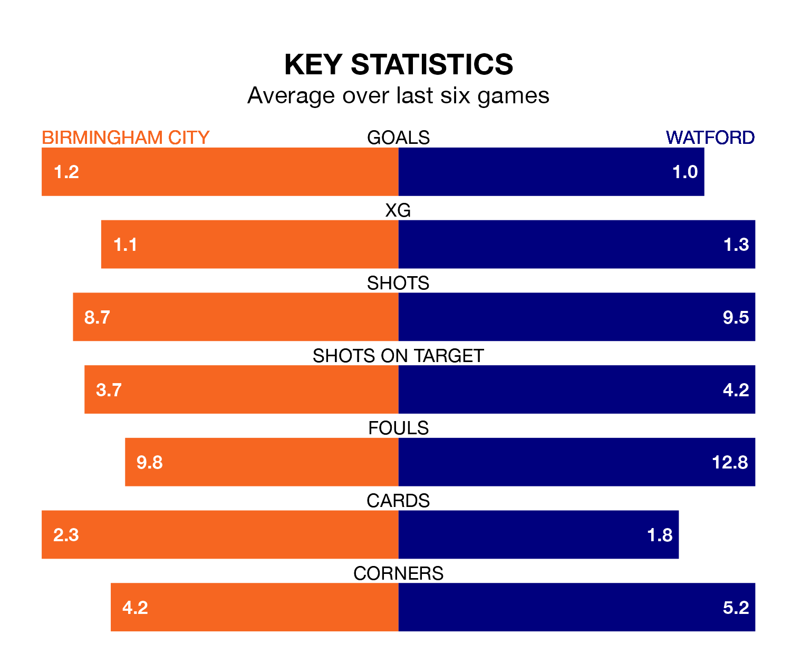

Birmingham City face Watford at St Andrew's on Saturday looking to secure a first win in six EFL Championship games.
The Blues have lost four and drawn one matches since they last earned three points – against Sunderland on February 17.
They face a Watford side who have won just one and drawn one over that time.
In the last 10 years, Birmingham and Watford have played each other on seven occasions. Birmingham won one of them, Watford five, and they drew once.
On average, the Blues scored 0.4 goals and the Hornets 1.7 in those matches.
Their last meeting was on September 16, when Watford won 2-0 at home.
Birmingham are 21st in the table after 37 games, of which they have won 10 and drawn nine, earning 39 points.
Watford are seven places ahead of City in 14th, with 11 wins and 12 draws putting them on 45 points.
With 42 goals in 37 games so far this season, the Blues are scoring at below the league average rate with 1.1 goals per game. And they are conceding more than average, letting in 58 goals at a rate of 1.6 per game.
The Hornets, meanwhile, are average scorers, with 1.4 goals per game. They have also conceded 1.4 goals per game.
Birmingham's last match was on Tuesday, a 1-0 loss against Middlesbrough.
Watford lost 2-1 against Coventry City last time out, on March 9, with Ryan Porteous on the scoresheet.
Saturday's match will be refereed by Matt Donohue, who has taken charge of 23 EFL Championship games so far this season, issuing one red card and booking 98 players. He has awarded three penalties.
The last Birmingham game Donohue refereed was a 2-2 home draw with Swansea City on January 13. He is yet to oversee a match featuring Watford this season.
Updated: 15:10 (UTC), 15/03/24